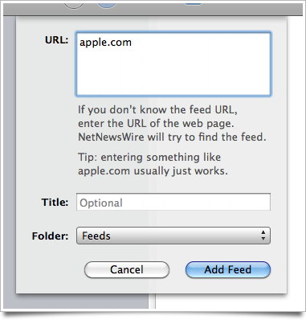

How to find and add feeds
Say you’re at apple.com in your web browser, and you want to get Apple news in NetNewsWire.
You don’t know where the feed is — but that’s okay. Here’s what to do:
Click the + button in the toolbar. (Or type cmd-N.)
Copy-and-paste, or type, apple.com into the sheet that appears, as shown below.

Optional: If you want to give it a title, you can — but you don’t have to. The feed will contain a title, and NetNewsWire will use that automatically.
Optional: If you want to put it into a specific folder, you can, if you’ve made some folders. You don’t have to. (You don’t even have to use folders if you don’t want to.)
Click the Add Feed button.
NetNewsWire will then try to find the feed for apple.com, then it will add it to your list of feeds. Most of the time this works — most sites make it so NetNewsWire can find the feed easily.
The upshot is this: any time you’re at a site, and you want to add its feed to NetNewsWire, just click the + button, then paste in the URL of the site, then click Add Feed.
Another way to add feeds
If you’re a Safari user, you can add feeds to NetNewsWire just by clicking.
If NetNewsWire is your default RSS reader, you’re set. If it’s not, you can make it your default easily. Here’s how:
Open Safari’s preferences and click the RSS tab.
For Default RSS Reader, choose NetNewsWire.
Now whenever you see something in Safari that says it’s a feed, just click on it, and Safari will open NetNewsWire so you can add the feed.
Sometimes Safari will even tell you when a site has an RSS feed. Watch the address bar — you’ll see something like the screen shot below:
Just click on it, and Safari will open NetNewsWire so you can easily add the feed. (The URL of the feed will appear in NetNewsWire’s add-feed sheet.)